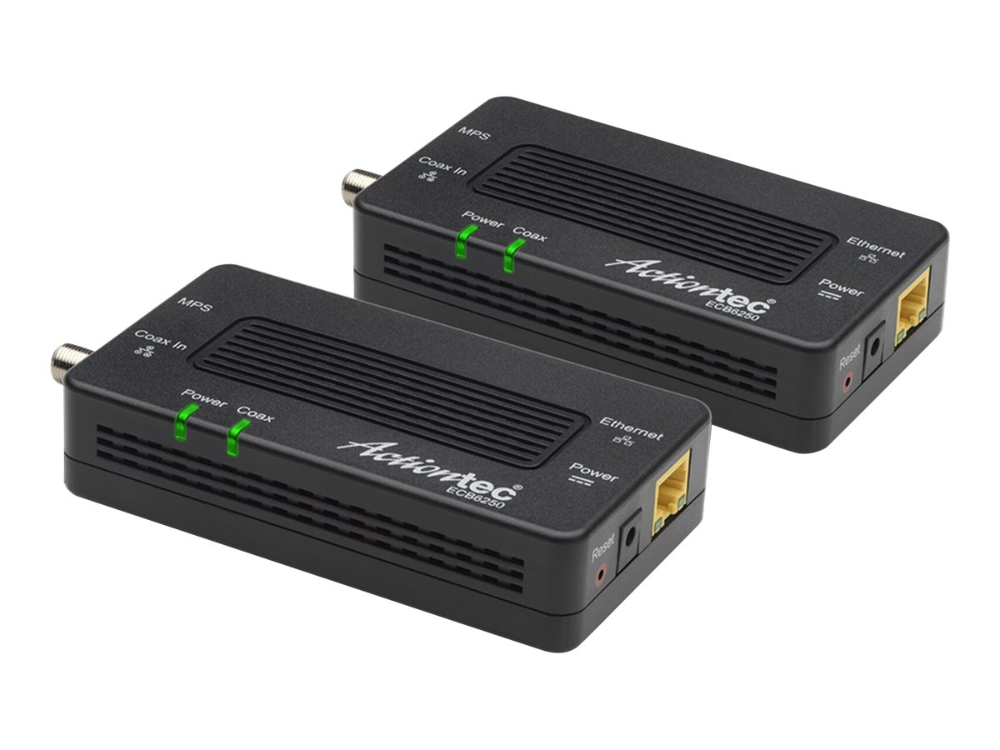
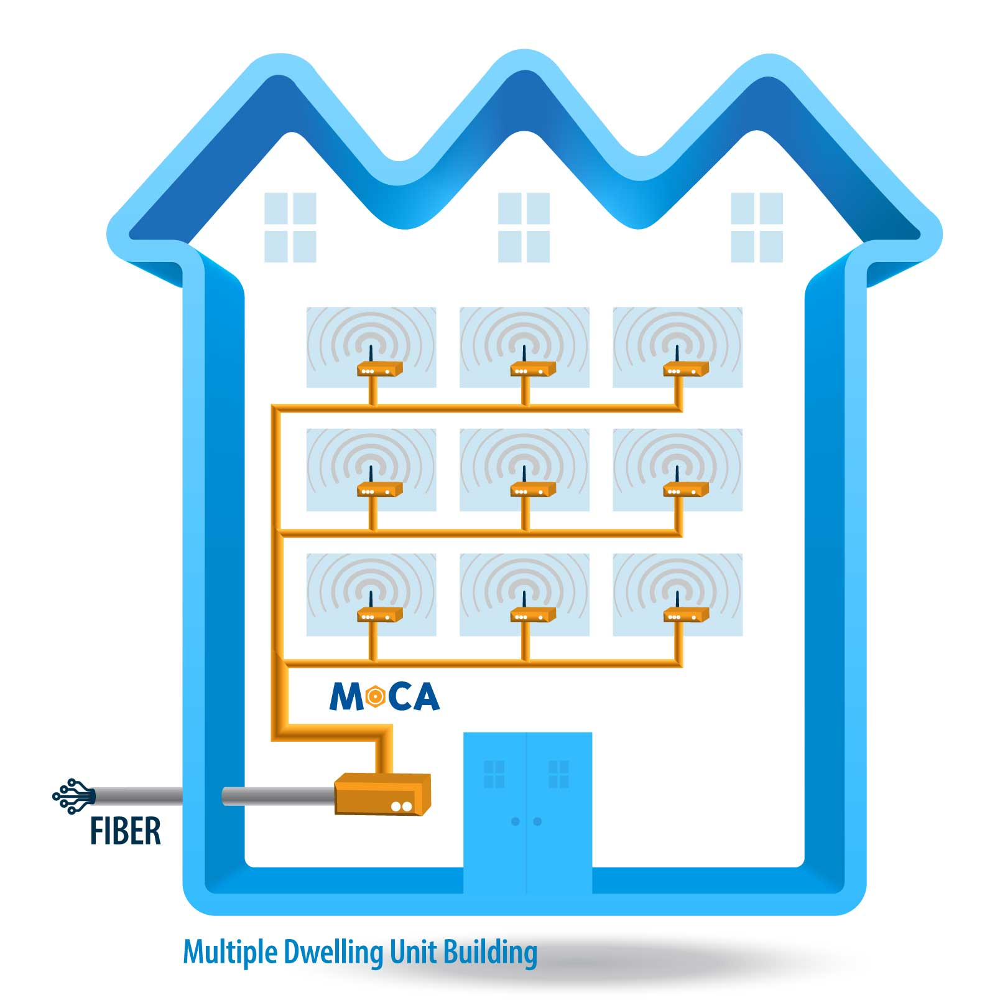

Solving the issue of poor internet in a home built before the age of high-speed ethernet's popularity.

The problem: fiber internet installed on a floor different to where the devices are located. Running a long ethernet cable openly throughout the house, running wire through the walls, upgrading internet to an even higher speed each have their own respective hurdles, especially in an old house with outdated landline and coaxial outlets.
The technology known as MoCA (Multimedia over Coax Alliance) solves this issue of old outlets. Fiber internet can be ran through old coaxial cables, allowing for a stable connection without the need for new wiring.
Though I expected this little home networking project to be a quick and cheap fix, it ended up being a bit complicated. You need at least two adapters that can attain the speed you pay for, and if you have devices still using coaxial wiring, the adapters will not work unless they run on a certain frequency.
To set this up, the fiber ONT needs to plug into the router, and the router needs to plug into the MoCA adapter ethernet port. The adapter then needs to plug into the coaxial outlet, and the outlet needs to connect into a splitter that is compatible with MoCA technology. Coaxial wiring from other rooms need to connect to the splitter, and more adapters are needed for more outlets. The second adapter needs to plug into the coaxial outlet where the second router will go, and that router then gets plugged into the adapter. Devices then can wire to that router to achieve maximum fiber speeds, all through old coaxial wiring.

This hardware installation was particularly important for beginning my selfhosting homelab project, because it is ideal for servers to be connected via wired connections, as virtualization using wireless can have hiccups and latency issues.